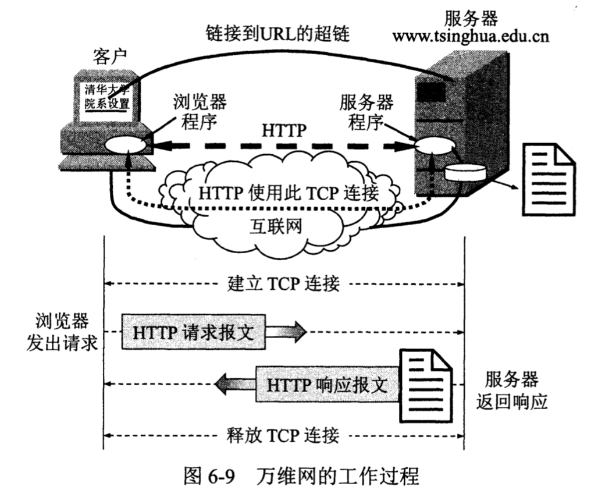
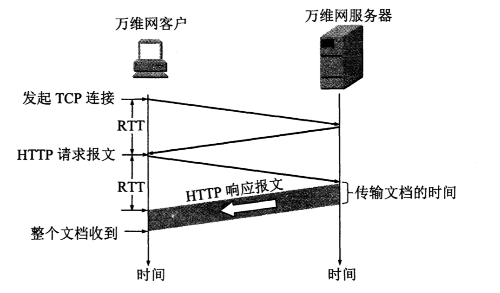
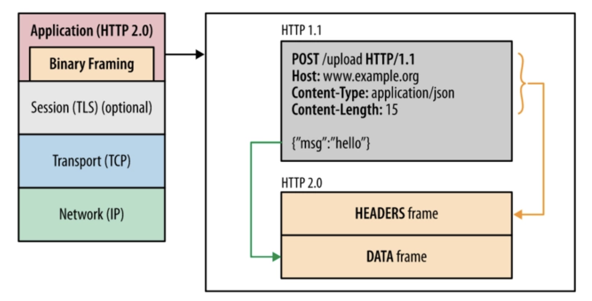
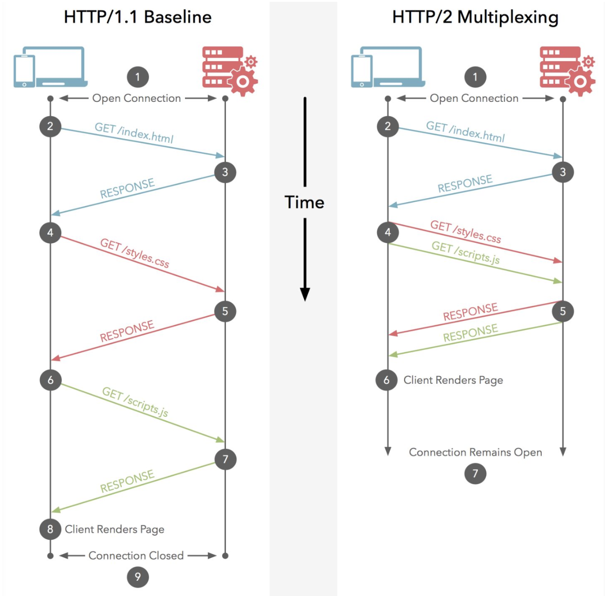

在找实习的过程中，不止一次被问到 "你了解HTTP2.0么？"，"HTTP2.0相比于HTTP1.x有什么区别？"。如果你之前被问到过这个问题，想找一个完美的答案，希望这篇Blog可以帮助到你；如果你正在找实习的话， 请一定要看下本文。
1. 什么是HTTP协议
传输层的TCP协议为应用进程提供了端到端的通信服务。但不同的网络应用的应用进程之间，还需要有不同的通信规则。因此在传输层协议之上，还需要有应用层协议。每一个应用层协议都是没了解决某一类应用问题。
HTTP 协议就是一个应用层协议，它定义了浏览器（即万维网客户进程）怎样向万维网服务器请求万维网文档，以及服务器怎样把文档传送给浏览器。

2. HTTP1.X的缺点
任何事物都是螺旋上升的，计算机的发展也不例外。所以 HTTP2.0 的出现一定是为了弥补 HTTP1.X 的缺点。如果面试官单纯的问你是否了解 HTTP2.0，我们先回答 HTTP 协议是一个应用层协议以及它解决的问题，然后说 "HTTP2.0 是为了解决 HTTP1.X 的 ... 缺点"。任何一个面试官都会眼前一亮。那么让我们看一下 HTTP1.X 到底有哪些缺点。
- HTTP1.0 连接无法复用
HTTP 协议首先要和服务器建立 TCP 连接（三次握手），如果连接无法复用，就意味着我们每请求一个文档就需要进行一次 TCP 连接的建立，这样的开销是十分巨大的。
HTTP1.0 需要在 request 中增加 ”Connection： keep-alive“ 才能支持长连接。而 HTTP1.1 默认支持。

- HTTP1.0一次只允许在一个TCP连接上发起一个请求，HTTP1.1使用的流水线技术也只能部分处理请求并发，仍然会存在队列头阻塞问题，因此客户端在需要发起多次请求时，通常会采用建立多连接来减少延迟。
- 请求报文与响应报文首部信息冗余量大
- 数据未压缩，导致数据的传输量大
3. HTTP2.0的改进
HTTP2.0 采用新的二进制格式传输，之前的 HTTP1.X 都是基于ASCII码。基于文本的方式传输数据存在很多缺陷，文本的表现形式有多样性，因此要做到健壮性考虑的场景必然有很多，但是二进制则不同，只有0和1的组合，因此选择了二进制传输，实现方便且健壮。

3.1. 多路复用
由于 HTTP2.0 使用二进制格式传输，其中帧是最小的数据单位，每个帧会标识出该帧属于哪个流，流是多个帧组成的数据流。所谓多路复用，即在一个TCP连接中存在多个流，即可以同时发送多个请求，对端可以通过帧中的表示知道该帧属于哪个请求。在客户端，这些帧乱序发送，到对端后再根据每个帧首部的流标识符重新组装。通过该技术，可以避免HTTP旧版本的队头阻塞问题，极大提高传输性能。

3.2. 头部压缩
在 HTTP2.0 中，我们使用了HPACK（HTTP2头部压缩算法）压缩格式对传输的header进行编码，减少了header的大小。并在两端维护了索引表，用于记录出现过的header，后面在传输过程中就可以传输已经记录过的header的键名，对端收到数据后就可以通过键名找到对应的值。
3.3. 服务端推送
在 HTTP2.0 中，服务端可以在客户端某个请求后，主动推送其他资源。可以想象一下，某些资源客户端是一定会请求的，这时就可以采取服务端push的技术，提前给客户端推送必要的资源，就可以相对减少一点延迟时间。